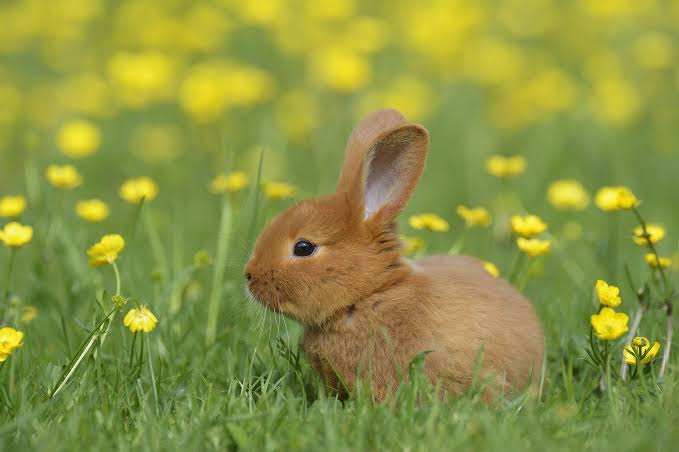

Bunnies
Bunnies (rabbits) are small, plant-eating mammals belonging to the family Leporidae and the order Lagomorpha.
Key Characteristics
- Physical Traits: They have long ears for detecting predators, powerful hind legs for jumping, and teeth that never stop growing.
- Diet: Their diet consists mainly of fresh hay and grass, complemented by leafy greens and specialized pellets.
- Lifespan: Domestic rabbits live an average of 8 to 12 years, making them a long-term commitment.
- Terminology: A male is a buck, a female is a doe, and a baby is called a kit or kitten.
Pet Care Essentials
- Housing: They need safe indoor spaces with plenty of room to roam rather than tiny outdoor hutches.
- Companionship: Bunnies are social animals that thrive best in bonded pairs.
- Veterinary Care: They require specialized care from veterinarians experienced with lagomorphs.
